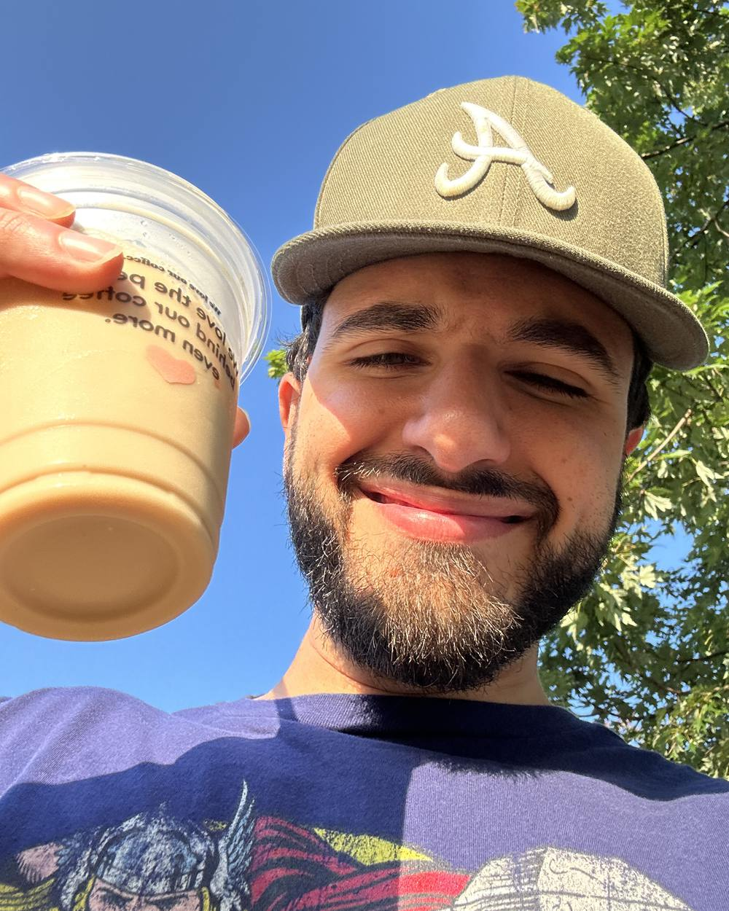

About Omar Bahhur

I'm Omar Bahhur, a Senior Software Engineer living in Atlanta, Georgia. My work sits where software engineering, cybersecurity, and AI meet — and I care as much about leading teams well as I do about the code itself.
Background
[TODO: 2–3 sentences on your career path — where you started, what you've built, the kinds of companies or domains you've worked in.]
Cybersecurity & AI
[TODO: What you actually do in these areas — e.g. security tooling, threat modeling, ML/LLM systems you've shipped, certifications.]
Leadership
[TODO: Teams you've led or mentored, how you approach engineering leadership, anything you're proud of shipping as a team.]
Education
M.S. in Computer Science
I'm pursuing my Master's in Computer Science through Georgia Tech's online program (OMSCS), focusing on [TODO: your specialization — e.g. Machine Learning, Computing Systems, or Interactive Intelligence].
Completed
- Database Systems Concepts & Design CS 6400
- Network Security CS 6262
- Introduction to Information Security CS 6035
- AI, Ethics, and Society CS 6603
Planned
- Introduction to Operating Systems CS 6200
- Advanced Operating Systems CS 6210
Outside of work
[TODO: 1–2 sentences — interests, community involvement, what you do off the clock. This humanizes the page; keep it short.]